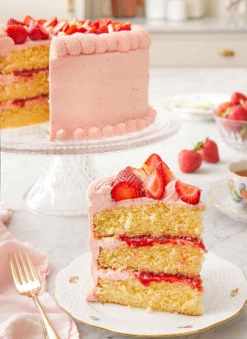
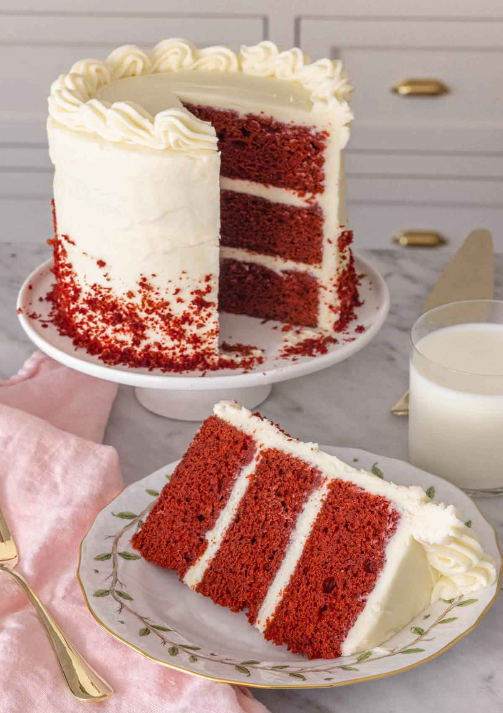
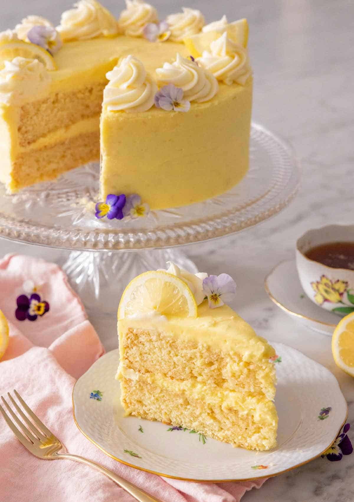

Strawberry lemonade cake
Soft, tender, and fluffy, this Strawberry Lemonade Cake recipe is bursting with bright flavors from the lemon juice, lemon zest, and fresh strawberries. A delicious strawberry buttercream with hints of lemon frosted between each layer of cake paired with a strawberry reduction, you won’t be able to get enough of it after your first bite! Beautiful and refreshing, it makes for the perfect spring or summer cake.
A slice of strawberry lemonade cake on a plate in front of the cut cake in the back on a cake stand.

Inspired by strawberry lemonade, this cake is the perfect balance of sweet and tangy. Light, moist, and buttery, this strawberry lemonade cake recipe is filled with a delicious strawberry lemon buttercream and strawberry reduction. Each bite is bursting with lemon and strawberry notes, making it a delightful combination of sweet, tart, tangy, and fresh.
This cake is so eye-catching with its beautiful pink frosting and fresh strawberries on top. It’s definitely going to become the focus of attention at every upcoming summer gathering.
how to make:
-
In a small saucepan, combine the strawberries, sugar, and lemon juice. Bring to a simmer over medium-high heat. Cook while frequently stirring until the mixture is thick and jammy. Transfer to a bowl and refrigerate until chilled.
-
Whisk together the flour, baking powder, baking soda, and salt in a medium mixing bowl.
-
In a large mixing bowl or the mixing bowl of a stand mixer fitted with the paddle attachment, beat the butter on medium speed until creamy. Add the sugar, lemon zest, and vanilla and beat until light and fluffy.
-
Add in the eggs, one at a time, beating well after each addition. Gradually add in a third of the flour mixture, followed by half of the milk. Repeat, alternating with the remaining flour and milk. Add the lemon juice and beat just until combined. Divide the batter among the three greased 8-inch baking pans and bake for 30 to 35 minutes. Allow the cakes to cool in the pans for 20 minutes before transferring them to wire cooling racks to finish cooling.
-
In the bowl of a stand mixer fitted with the whisk attachment, beat the butter on medium-high speed until very pale and fluffy. Reduce the speed to low and gradually add in half of the powdered sugar before beating in the strawberry reduction. Beat in the remaining powdered sugar before adding the lemon juice and heavy cream. Beat on medium-low speed until fluffy.
-
Place 2 cups of frosting in a piping bag with a decorative tip. Place a cake layer on a cake stand or serving plate. Spread ½ cup frosting over the top of the cake layer.
-
Pipe a border on the edge. Spread 3 tablespoons of strawberry reduction in the middle of the frosting border. Top with another cake layer and repeat with frosting and reduction.
-
Top with the remaining cake layer. Spread the remaining frosting over the sides and top of the cake, and pipe decorations on the cake as desired.
-
Garnish with fresh strawberries and lemon zest if desired.
-
Pipe any leftover frosting on top between the garnishes if desired. Chill the strawberry lemonade cake for 2 hours before slicing.
red velvet cake
You won’t believe how easy it is to make this classic Red Velvet Cake recipe from scratch! This cake is so incredibly soft, tender, moist and pairs wonderfully with my tangy and sweet cream cheese frosting. With its wonderful velvety texture and fluffy frosting, you won’t be able to get enough of this irresistible cake.

Whether you are looking for a stunning red cake for Valentine’s Day or just need a showstopping cake for birthdays, holidays, or any other occasion, this red velvet cake recipe fits the bill. More than just a red-tinted vanilla cake, this cake is tangy and buttery, with a mild cocoa and sweet vanilla flavor.
Red velvet cake is said to have originated during the Great Depression with the popularization of red food coloring and is a popular dessert in the Southern United States. It is such a unique cake that everyone will love. It’s definitely worth the effort to make from scratch as it’s far superior to any box mix. The cake’s dense and soft but still moist with a velvety crumb. It’s always a crowd-pleaser!
how to make:
-
In a medium bowl, sift the flour, salt, and baking soda together.
-
Cream the butter on medium speed in the bowl of a stand mixer fitted with a paddle attachment. Add in sugar and mix on medium until light and fluffy. Add the eggs in one at a time, beating each until well combined.
-
Beat in the vanilla, then sift the cocoa powder into the butter mixture. Beat just until combined. Scrape down the bowl.
-
In a liquid measuring cup, combine the buttermilk, vinegar, and red food coloring. (The more you use, the brighter the color when baked.)
-
With the mixer on low speed, add half of the flour mixture followed by half of the buttermilk mixture to the mixing bowl, beating just until combined. Repeat with the remaining flour and buttermilk. Stop and scrape down the bowl occasionally.
-
Divide the batter among three buttered 6-inch pans and bake for about 30 to 35 minutes or until the centers are springy to the touch.
-
To make the cream cheese frosting, beat the butter, cream cheese, vanilla, and salt together until smooth and fluffy. Gradually add the sifted powdered sugar to the mixer and continue mixing until incorporated. Set aside a cup. Place a cake layer on the cake stand and evenly spread ½ cup of frosting on top. Continue with the rest of the layers, then use the remaining frosting to coat the outside of the cake.
-
Place the cup of frosting into a piping bag with a decorative tip. Pipe a decorative border on top of the cake or as desired. Place the red velvet cake in the fridge and chill for about 1 hour or until the frosting is set.
lemon cake
Light, fluffy, and deliciously tangy, this Lemon Cake is the perfect dessert for any occasion. With two layers of moist lemon-flavored cake coated in a rich lemon-flavored cream cheese frosting, there’s no shortage of bright lemon flavor in this dessert. You will absolutely fall in love with this tender cake after the first bite melts in your mouth.

Moist, buttery, and tender, this lemon cake recipe is like a ray of sunshine! Made from scratch with real ingredients such as freshly squeezed lemon juice and lemon zest, this cake is full of flavor and is the perfect balance of sweet and tart. Unlike some cakes, this is not overly sweet, and the tanginess of the cream cheese and buttermilk help balance everything out. Everyone will love the brightness and lightness of the cake.
The best part about this lemon cake is that it comes together in only a few easy steps, so you can whip it up whenever you crave it! If you like lemon desserts, try my lemon bars recipe, lemon blueberry cake recipe, and lemon cupcakes recipe as well!
how to make:
-
In a medium mixing bowl, whisk together the flour, baking powder, baking soda, and salt.
-
In a large mixing bowl or the bowl of a stand mixer fitted with the paddle attachment. Beat the butter on medium speed until creamy. Add the sugar and lemon zest and beat until light and fluffy.
-
Add the vanilla then eggs one at a time, scrape down the bowl between additions, and beat until well combined and fluffy.
-
Stir the buttermilk and lemon juice together. With the mixer on low speed, add a third of the flour mixture, followed by half of the milk mixture. Continue, alternating between the flour and milk, mixing just until combined. Divide the batter among two greased 8-inch cake pans. Bake for 35 to 40 minutes, then let cool in the pan for 15 minutes before inverting onto a wire rack to cool completely.
-
To make the frosting, beat the butter and cream cheese together until creamy. Add the lemon zest and beat until light and fluffy before adding the powdered sugar alternating with a little bit of the lemon juice. Beat in the vanilla and continue to beat until smooth and fluffy. Place one layer on a cake stand or serving plate. Top with 1 cup of frosting, spreading smoothly out to the edges.
-
Top with the second cake layer and spread the remaining frosting all over the outside of the cake. Decorate the lemon cake with thin lemon slices or edible flowers, if desired.